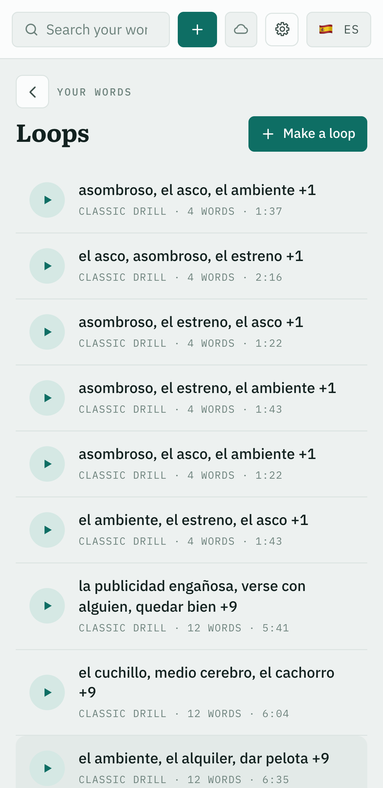
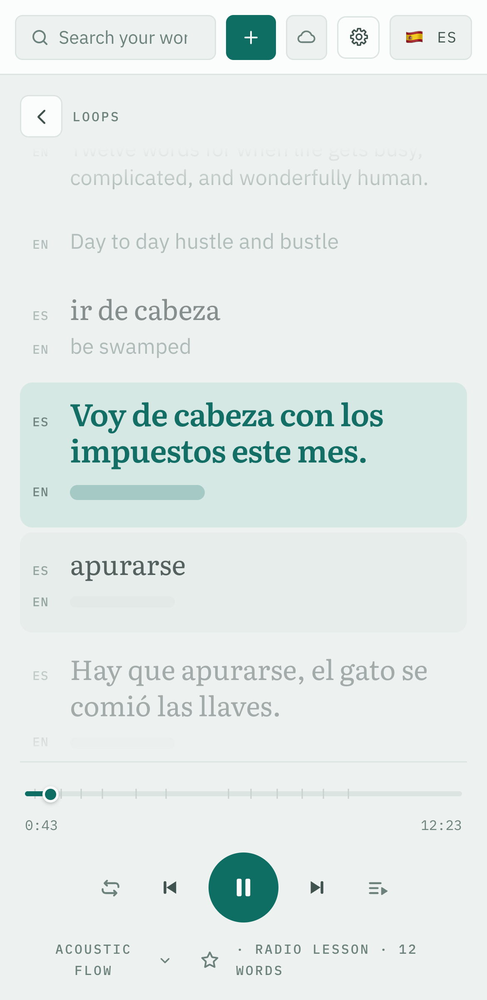

Kinds of loop
- Classic drill. Each word three times with its translation, and a pause to recall it.
- Alternating. The same, straight through.
- Radio lesson. An intro, each word with an example and sometimes a remark, a quiz halfway, then every word again.
- Story. A short story told in pieces between the words.
- And two more: say it back, and review.
On the screenA radio lesson. “ir de cabeza” and its translation have been said; its example is being said now, and the answer is still a bar.
How it is made
The wordsYou choose them: a topic, a selection from the list or the map, or a number of words.
The voiceA word said three times is three recordings. A language model writes a direction for each, so no two repetitions sound alike.
The musicGenerated new for every loop, in a style you pick or a surprise: a rhythmic background made to sit under speech. Keep one you like and reuse it.
MeasuredIn blind listening the provider's 32 kbps MP3 was picked out every time, so recordings are requested uncompressed and kept as Opus.experiments/pronunciation-encoding